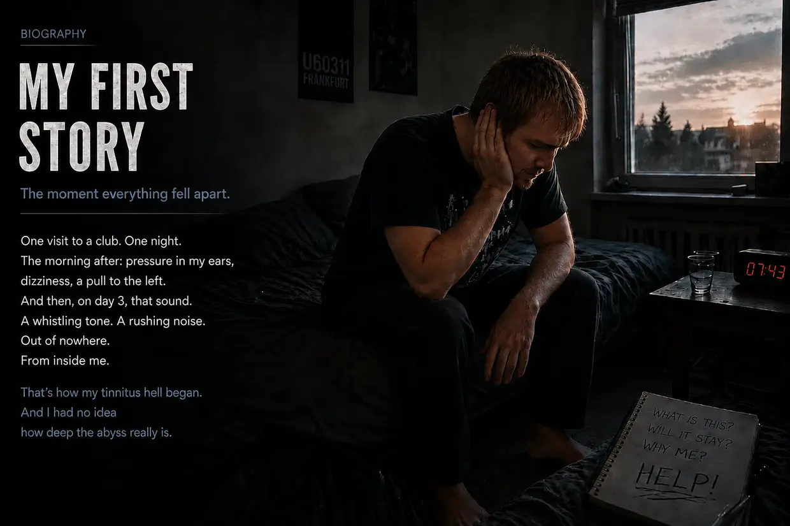

My Tinnitus Story—Part 1: The Ride Through Hell
Hello, my name is Dustin Müller. As someone who had tinnitus more than once—and no longer does—I felt an overwhelming need to create this page. Through years of research, real biohacking protocols, and my own experience, I want to show other sufferers how I personally found my way to a complete recovery. But before we dive deep into the mechanisms, I have to tell the story of how it all began for me. And it wasn’t some random medical fluke—it was a head-on crash.
Looking for the short version? This full version goes into every detail—the audiograms, the ENT visits, each individual breakthrough. If you’d prefer something shorter, take a look at the short version.
Autumn 2011: The Invincible Body—Already Under Strain
When you’re 23, you have endless energy and think your body can take anything. I treated my ears with that same mindset. I loved music. For years, I listened through headphones at a volume my parents could hear through my closed bedroom door. My system had already been “softened up,” without me knowing it.
It all started because of my cousin. Since I had never really been to a club, he suggested I come with him to U60311 in Frankfurt. I had a bad feeling about it, but agreed anyway. Even as we headed down the stairs, I could feel just how brutally physical the bass was. Once inside, I naively picked what I thought was the best spot—about 10 meters directly in front of the massive speakers, with my left ear facing the sound source. That was the mistake that toppled the first domino.
The Morning After: The Deceptive Calm
As soon as the door closed behind us, I felt the insane pressure in my ears—much stronger on the left. Everything sounded muffled, as if I were underwater. My cousin said that was normal and would go away. I was drunk, so I fell into bed. The next morning, when I tried to get up, I slammed straight back into the pillow—my balance system was shot, and a violent physical pull kept dragging me to the left.
I had such deep faith in my body’s ability to regenerate that I almost found it funny: Time will take care of it. And it seemed I was right: by day 2, the pull to the left was easing, and the pressure had almost disappeared. I breathed a sigh of relief—I thought I’d gotten away with it.
Day 3: The Monster Awakens
Day 3 after the club. I woke up and suddenly heard a sound like a refrigerator beeping. What the hell? I pressed my head to the wall. Leaned in and listened to the power outlet. Checked the computer, the alarm clock. Nothing. Then I covered my ears with my hands.
Oh shit. It’s coming from inside me. It’s in my head.
I stood there in shock for several minutes. What is this? Is it going to stay? In my left ear: humming, rushing, sirens, and a loud high-pitched tone. At that point, I wasn’t aware of any tinnitus in my right ear. Despite the shock, I thought: It’ll go away.
Poisoning the Software (The 14-Day Deadline)
Within minutes, I found answers online: sudden hearing loss and inner-ear damage. Permanent hearing loss, often accompanied by tinnitus. And then the sentence that made my blood run cold: “It has to be treated within 14 days—otherwise it becomes chronic, and you have it for the rest of your life.” On the tinnitus.de forum, I read threads by people who had been living with the thing for 5 years. Five years? Holy shit. What had been a physical defect became a massive psychological threat.
Betrayal in White (My First ENT Visit)
I drove to the ENT doctor I had seen as a child. Hope. Salvation is just around the corner. I told him about the night at the club and my symptoms. Already slightly annoyed, he said: “Yeah, just don’t pay attention to it. Listen to some music to drown out the sounds.” I followed up: “But doesn’t it have to be treated within 14 days? And is more sound exposure really a good idea?” He said: “We’ll start with audiometry.” And with that, he was gone. My faith was crumbling.
The Horror of Silence (Audiometry)
Only when I stepped into the sound booth did I realize just how severe my hearing damage really was. In that absolute silence, every form of natural masking disappeared—the sounds in my left ear were unbelievably loud. The test had three parts: determining the tinnitus frequency and loudness, measuring my general hearing ability, and testing bone conduction through the skull.
The Verdict
With the results in his hand, the doctor explained that my hearing was permanently damaged and nothing could be done about it. Shocked, I asked if there was any chance. Slightly exasperated again, he said: “You have to learn to live with it. Don’t listen for it, distract yourself, put on headphones.” When I asked the absurd question of whether I could keep going to clubs, he replied: “Yes, that won’t cause any problems.” And with that, he said goodbye.
The Vow and the Drive Home
The drive home was pure hell. A crushing weight. In my despair, I briefly thought: Either I get rid of this, or I don’t want to live anymore. But once I was home, the bottomless grief suddenly turned into defiance. I cannot believe that not one doctor in Germany knows what tinnitus is. I clenched my fists:
“Either the tinnitus goes, or I go. I won’t let this thing dominate my life. I have to find out for myself what can be done.”
The Wild West of Treatment Approaches
I started educating myself and ran into an overwhelming flood of “therapies”:
- Cortisone & Ginkgo: Agents that improve circulation and reduce inflammation—they seemed like a plausible way to help my hearing recover.
- Jaw and Neck (TMD/Cervical Spine): Theories that muscle tension triggers the sounds. But because I knew for certain that the club bass had given me tinnitus, my bullshit radar went off.
- TRT and Masking: Cover it with other sounds. I could actually reduce the tinnitus temporarily this way—but when I switched the masking sound off, it came back more aggressive and louder. (Today I know: every additional sound forces the already depleted hair cells to work—they use up their last ATP, which they actually need to heal.)
- Supplements: I laughed at those people back then. What idiots, I thought—they were even spending money on something I considered completely useless. I could never have dreamed that this exact path—real cellular energy, ATP production, the right nutrients—would later be how I beat my tinnitus.
The Second ENT Visit: The Disastrous Advice
On the morning of my second ENT appointment, the tinnitus had suddenly intensified dramatically—and now, for the first time, I could hear it in my right ear too. (Looking back, I believe the continued sound exposure on medical advice—with music, and at night with white noise—had brought my cells to their knees again and pushed my already strained right ear past the point at which the tinnitus became perceptible there too.) The second ENT doctor was friendly and encouraging. He prescribed ginkgo and recommended plenty of sleep and exercise. When I asked about headphones, he said: “They’re actually beneficial for distracting yourself.” (From what I know today about cell biology, absolutely disastrous advice.) When I asked about the three-month mark for tinnitus becoming chronic, all I got was: “Let’s wait and see… you can also learn to compensate for it—that is, to tune it out completely.” There it was again, that half-sentence that ruled out any real recovery.
The Deceptive Hamster Wheel
And so the days and weeks went by. During the day, school kept me distracted. In the evenings, I escaped into the deceptive masking loop: music through headphones and a constant wash of waterfall sounds. That made it bearable in the short term. But biologically, I was going in circles: the background noise kept my exhausted ears under constant stress. My cells were burning through their last ATP to process this artificial noise instead of using it for physical repair. Pure survival mode.
The Second Crash: Hyperacusis and the Vertigo Somersault
One morning, massive pressure suddenly returned in my left ear. I tried to ignore it and drove to school. Because I still trusted the doctor’s advice, I made a disastrous mistake on the way: Favorite song on the car stereo, cranked way up. Had I known what was still waiting for me that school day, I would have turned around on the spot. The warning signs were already there. But I didn’t: the classes cost money, so I kept going. (That loud music was the very last straw for my utterly exhausted cells.)
During the first class, severe auditory distortion and painful hypersensitivity to normal sounds suddenly set in—hyperacusis. (Today I know: the “shock absorbers” in my ear, the outer hair cells, had used up their last ATP.) Over the next few hours, the pressure in my left ear became increasingly brutal. Then it happened: my entire field of vision began to rotate vertically—like half a somersault inside my head. The world turned upside down. Seconds later, my vision returned to normal. What remained: severe rocking dizziness, a powerful pull to the left, and muffled hearing on the left. (The buildup of ions in my inner ear had become so immense that it had flooded the adjacent vestibular organ.)
Panic-stricken, I tried to tough it out. As soon as the break began, I got out of there. The drive home was reckless—because of the extreme dizziness, I had to correct my steering every few seconds. But all I wanted was to be safe. This second crash was the ultimate turning point: I can’t wait this out any longer.
ENT Doctors 3 and 4: Pills Instead of Answers, the “Phantom Sound” Lie, and the Psych Label
I managed to get an emergency appointment with the third ENT doctor that same day. Audiometry, a smell test, a “positional vertigo” test that changed nothing. (What’s clear to me today: no loose crystals, but endolymphatic hydrops—shaking my head around wasn’t going to help.) A colleague then added another diagnosis: “Another sudden hearing loss—it’ll be gone in 14 days”—or maybe it came from blocked sinuses. Pure guesswork based on symptoms. Then came the kicker: “You know, many people fall into depression. If the symptoms persist, I’ll gladly prescribe antidepressants.” I sat there thinking I couldn’t be hearing this right. My balance system had collapsed, and her solution was… psychiatric drugs? I swore to myself: never.
I gave the fourth ENT doctor—the “specialist”—my entire story. Instead of addressing the cellular level, his response was ice-cold: “Have you ever heard of cognitive behavioral therapy? Your problem is that you focus too much on your hearing problems, and that’s what keeps the tinnitus going.” I pushed back: “But that sound had a physical cause—the night at the club!” He didn’t respond at all. When I asked about cortisone, he said: “That would only make sense in the first 14 days. In your case, we have to assume a phantom sound.” To finish, he again recommended TRT with masking sounds—and shut me down when I explained that masking only made my tinnitus more aggressive. The system had capitulated and shifted the blame onto me.
Rock Bottom: Isolation and System Failure
The nightmare reached its peak at my own birthday party (a month and a half after the sudden hearing loss). Hyperacusis and auditory distortions were driving me insane. My own tinnitus was so loud that it completely drowned out what other people were saying. Then came a bizarre phenomenon: letters sounded completely different than before—an “S” sounded like an “F,” a “T” like a “D.” I couldn’t endure the sensory overload anymore, cut my own birthday party short, and fled home. In the days that followed, the dizziness became so extreme that I was at times in danger of toppling over—a cluster of symptoms that, medically speaking, matched Ménière’s disease. I was completely isolated and cut off. Abandoned by life and abandoned by the doctors, who had done nothing but drill it into me that my mind was playing tricks on me and that I needed antidepressants.
The First Key Experience: Proof the “Phantom Sound” Was a Lie
Late one weekend, of all times, I developed inflammation of my ear canal caused by an infection—so I had no choice but to drag myself to the emergency department at University Hospital Frankfurt. The ENT doctor used a tiny suction device on each ear canal in turn. And at that exact moment, I had the key experience: as the piercing noise raged in my left ear, I simultaneously felt the tinnitus there react aggressively and explosively to the racket. Then, in my right ear: exactly the same.
It was a perfect A/B test on my own body. My mind tore the “specialist’s” claims to pieces on the spot: A psychological phantom sound does not react instantaneously to a purely mechanical noise stimulus in the corresponding ear canal! This reaction was absolute proof to me: the faulty source was still down there in my ear. Exposed to that noise, the cells immediately screamed for help.
The Cortisone Infusion and the Gauze Miracle
The ENT doctor casually asked how long it had been since the sudden hearing loss. Two months. Since I was still within the magic three-month window, he said cortisone was worth a try. I agreed immediately and stayed overnight on the ward. From my hospital bed, I kept researching and landed on the personal website of a tinnitus sufferer. What I read there made sense in terms of cell biology: more noise drastically worsens tinnitus. Plus a link to Dr. Wilden and his low-level laser therapy, which specifically stimulates ATP production in the cells. It matched my experience with the suction device 100%.
After 3 days, I was discharged—with thick gauze packing in both ear canals because of the ear canal inflammation. During those days, I could already tell: the tinnitus had become noticeably quieter! At first, I thought it was the cortisone. But when I read on Dr. Wilden’s site just how essential it was to deliberately seek out silence, it hit me like a bolt of lightning: my ears had been heavily shielded by the gauze for days! A normal ENT doctor would never have had my ears bandaged so completely. I had inadvertently been given proof that complete silence had an effect.

The Bang, the Dynamics, and the Absolute Silence Protocol
A few days later came another important realization. While I was using a small bottle of cream right by my ear, there was suddenly a loud bang. Within a fraction of a second, my tinnitus howled—BUT returned to its “normal” level very quickly. It became crystal clear to me: my tinnitus wasn’t “static”; it was extremely dynamic! It worsened in response to noise in real time—and grew quieter when I consistently sought out silence.
I took uncompromising action. From then on, I deliberately spent as much time as possible in complete silence. Music, movies, and seeing friends went from being part of everyday life to rare “rewards”—and if any of them did happen, it was strictly without headphones, at very low volume, and for a very short time.
Six Months of Silence—and the 25% Plateau
IN FACT, the tinnitus decreased from month to month. Looking back, it was about one-quarter lower in volume after roughly 8 months. Of course, I couldn’t maintain this complete silence 100% perfectly—even unavoidable drives (200 km round trip) pushed the tinnitus back up to its previous high volume. I had effectively protected my ears for an entire week “for nothing.”
Then something frustrating: at about 20–25% improvement, the recovery suddenly stalled. I took my isolation to the extreme—avoided conversations, wore earplugs constantly, and had even banished the ticking wall clock from my room. But there was no further change. Zero.
Atlas Correction, TMD, and Cervical Spine Problems—the Dead End
Then I had the idea of taking another deep dive into the jaw, the cervical spine, and tinnitus. I came across temporomandibular disorder (TMD) and got a bite splint from my dentist. An orthopedic center diagnosed a cervical spine syndrome and prescribed strength training (Med X). I followed both regimens rigorously while still maintaining silence. After 2 months, the sobering reality set in: the TMD and neck problems improved—but ABSOLUTELY NOTHING changed about the tinnitus.
My last resort: atlas correction. I drove 200 km to an alternative health practitioner, who repositioned my misaligned atlas with a special device and manual techniques. Weeks passed—and that did nothing either. The only byproduct: the alternative health practitioner recommended psyllium husks, a mineral-clay mixture, and probiotics for my chronic gastritis. And indeed, the stubborn inflammation of my stomach lining, which had lasted almost a year, disappeared. That impressed me—conventional medicine had failed; the alternative health practitioner had come through.
Vitamin B12—The Most Important Key Experience (By Chance)
My father was suffering from polyneuropathy at the time. His family doctor diagnosed a pronounced vitamin B12 deficiency and prescribed injections. When he gave himself an injection from an ampoule right in front of me one evening, he said shortly afterward that he was in less pain and felt warmer again. Could one little red ampoule really have such a physical effect?
I researched it and read: B12 is THE nerve vitamin. Vegetarians (I had been one since age 15!) and patients with chronic gastritis (mine had only recently subsided) are at particularly high risk. I had a blood test at my family doctor’s office: my B12 level was at the very bottom of the normal range, just short of a confirmed deficiency. But the doctor refused to give me injections—“still within the normal range.” I left the practice dejected.
When my father needed his next B12 injection that evening, I worked up the courage and had one too. Important: I explicitly advise against trying this without medical supervision. Wow—within minutes, I felt my circulation improve, a soothing warmth, and a clearer head. I went to bed relaxed.
THE NEXT MORNING: the absolute miracle. Seconds after waking, I noticed it immediately—the tinnitus had decreased dramatically! A sudden jump from a 25% improvement to just over 40%. I lay there stunned and close to tears. It did get worse again over the course of the day—but not all the way back to the old level. And the next morning, again: 40%.
On Dr. Wilden’s site, I read that his laser specifically stimulates ATP production in the cells. And B12 is essential for precisely that ATP production. CLICK! Maybe I don’t need the expensive laser at all—I can raise ATP through targeted nutrients.
Biliary Colic and the Lecithin Miracle (My Myelin Model at the Time)
While I was waiting for high-dose multivitamin supplements from the US, the next catastrophe hit me: biliary colic caused by gallstones. At the emergency room that night, the doctor would only offer surgery—cutting out my gallbladder. I refused and went home at my own risk.
Back to online research: one sufferer reported that taking lecithin granules for months had completely dissolved his gallstones. I got some the very next day, took 30 g, and actually felt the pressure in my right upper abdomen ease. Important: if you have gallstones, please make sure you seek medical supervision—this is my entirely personal experience in an acute situation, not treatment advice for anyone else.
But the real highlight came 3 days later: after a B12 injection plus lecithin granules, another miracle happened. The next day: 60–65% improvement from baseline! After months of stagnation. I researched and built the following model at the time: lecithin is a key building material for the myelin sheath (nerve insulation). I read that this was precisely the insulation that research said was damaged in noise-induced tinnitus: “It’s like the plastic insulation around a thin electrical cable has been destroyed.” And B12, I learned, was THE most important vitamin for regenerating the myelin sheath. Oh man—so I don’t just need ATP; I need BUILDING MATERIALS too! Today, I take a more open view of this mechanism: I still think involvement of the auditory nerve or myelin is possible, but I cannot prove it in my case. Another possibility is an indirect pathway: choline from lecithin could serve as a building block for acetylcholine and in that way support the parasympathetic nervous system, deep sleep, and regeneration—or lecithin accelerated cellular repair in several ways at once. Maybe both were involved.
The Breakthrough to 80% (The B-Complex Bypass)
With lecithin, a multivitamin supplement, and B12 injections, the recovery progressed—but the tinnitus stalled at around 70% improvement. My suspicion: the other B vitamins weren’t being absorbed sufficiently. I got B1 and B2 in ampoules, and B3, B5, and B8 as high-dose tablets. And YES YES YES: it kept getting quieter from one week to the next! In months 16 and 17 after that night at the club, the tinnitus was actually down to just 20% (an 80% improvement). But then it stalled again.
The Final Recovery: “Carpet Bombing” the Cells
I researched like a man possessed and came to the conclusion at the time that B12 and lecithin alone were far too narrow an approach. For the myelin repair I suspected and for other cellular rebuilding processes, the body needed a whole range of additional nutrients—omega-3 (DHA/EPA), amino acids, vitamin C, fat-soluble vitamins A/D/E/K, and minerals. I practically buried myself in them: B-vitamin injections 2 times a week, 30 g of lecithin 3–4 times a week, amino acid powder every day, 3 g of omega-3, high-dose vitamin C, the mineral blend from Life Extension, magnesium and zinc from NOW Foods, one glass of LaVita every day, plus multivitamin tablets from Dr. Rath. Orthomolecular “carpet bombing.”
The Fade-Out and the End of the Nightmare (100% Recovery)
With the complete nutrient stack, the dynamics changed for good. In my model at the time, my body now had the energy supplied by ATP AND the full range of building materials. Combined with my self-imposed monastic isolation, my body could finally work properly. Today, I see the improved energy supply as the main driver; at the same time, the nutrients supplied important cofactors and building materials and may have accelerated the process further. Just as at the beginning: in the morning, the cellular battery was fully charged after sleep—at its best. In the evening, the day’s fatigue made the tinnitus louder again. But the silence steadily carved its way deeper into the day: first, the tone was gone until noon. Then until the afternoon. The evening setbacks grew weaker and shorter.
And then came that one final morning—I will never forget it. Within a fraction of a second of waking, I sensed it: It feels different in my head. With my heart pounding—excited like a child at Christmas—I pushed my earplugs deep into my ears. I listened… and there was absolutely NOTHING.
The dimmer switch was at zero—for good. Morning, noon, evening—nothing. Only the natural, peaceful silence I had not known for almost two years. The tinnitus was gone. Completely gone.
The feeling was indescribable. A deep, warming sense of ultimate relief—and absolute vindication. I had won: I hadn’t given up, I had triumphed over the “learn to live with it” doctors, and in the end I hadn’t even needed the expensive laser. My body had repaired it on its own—the result was real: the tinnitus was completely gone. At the time, this was how I explained the mechanism: the myelin sheath had been restored, the hair cells’ actin cytoskeleton stood firm, the loose connection had been fixed, and the brain had switched off its emergency amplifier (central gain). Today, I see energy supply as the main driver of cellular regeneration, with a particular focus on hair cells, their stereocilia, and cell membranes. I still consider involvement of myelin or the auditory nerve possible, but I cannot prove it in my case. Biology had won.
What I didn’t yet know that morning: many months later, a different disastrous chain reaction would send my body crashing into the most severe form of CFS (chronic fatigue syndrome). But I carried this knowledge—that you can heal the “incurable” yourself—with me into the next hell.
The story doesn’t end here. What came after the first triumph was the true high-stakes test—and the deliberate, crazy proof that my biological model really works.